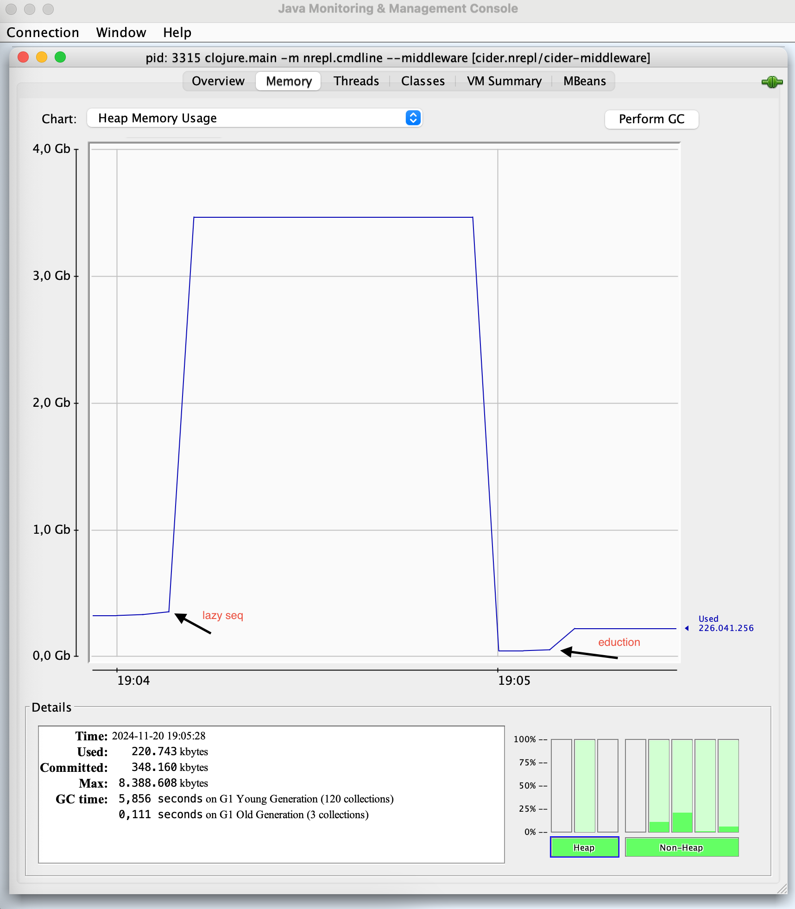

Transducers are to Clojure what monads are to Haskell: an almost endless source of inspiration for blog posts and discussions. I've heard and read about transducer in the past, but never got around to taking a real close look for myself. Now that I did take a closer look, I also learned some interesting things about Java's volatile keyword, the Java memory model, and the Java Concurrency Stress tests.
Before we look into transducers, let's talk about lazy seqs first. Consider the following expression:
(->> (range)
(filter even?)
(drop 5)
(take 5))
This expression can be read as follows:
The end result of the expression is a lazy seq containing the numbers 10, 12, 14, 16, and 18. Lazy evaluation is part of the foundation of Clojure. Without lazy evaluation, evaluating expressions like the one above would be impossible. You cannot eagerly construct the set of all natural numbers, because that would take an infinite amount of time and storage space.
Although lazy evaluation is what makes expressions like the one above possible, it also has its downsides. One downside is that each step in the transformation pipeline above leads to an intermediate lazy seq. They are created when calculating the end result and then immediately discarded.
Once the value of a certain element of a lazy seq has been calculated, this value is cached. When working with large lazy seqs while keeping a reference to the final result (either deliberately or by accident), memory use can be significant.
Consider the following expression, for example:
(let [r (range 3e7)]
[(last r) (first r)])
This expression takes the numbers 0 to 30 million minus one and returns a vector containing the last and first of those numbers. After evaluating (last r), all of these numbers are cached in memory, which takes a large amount of space. Since all but the first number are never used again, this space is wasted. We'll come back to this example below.
Because of these downsides (and more), some say that lazy evaluation should be avoided as much as possible. One way of avoiding lazy evaluation as much as possible would be to default to using transducers.
The following example shows an alternative expression for calculating the 6th to 10th even number:
(into []
(comp
(filter even?)
(drop 5)
(take 5))
(range))
This example uses a transducer, constructed by composing three other transducers, and returns a vector containing the numbers 10, 12, 14, 16, and 18. This end result is computed eagerly, and no intermediate lazy seqs are created.
Although there are some syntactical similarities between this expression and the one at the start of this post, something completely different is going on. Both this example and the one at the start of this post contain the expressions (filter even?), (drop 5), and (take 5). However, after macro expansion, these syntactical similarities are gone:
(clojure.core/take 5
(clojure.core/drop 5
(clojure.core/filter clojure.core/even? (clojure.core/range))))
Once the threading macro ->> is out of the picture, it is clear that the functions filter, drop, and take operate on seqs in the first example. In the example demonstrating transducers, (filter even?), (drop 5), and (take 5) each return a transducer.
It is not hard to imagine what (filter even? [1 2 3]) returns. Imagining what (filter even?) could return and how that could be put to good use is a bit more difficult.
A reducing function is a function that takes an intermediate result and a new input, and returns a new result. For example, + is a reducing function that takes an intermediate sum and a new number and returns a new sum. The function conj is also a reducing function, which takes an intermediate collection and a new value and returns a new collection that includes the new value. Generally speaking, reducing functions are used to construct a single value from a number of values, one step at a time. They're used to reduce multiple values into a single value.
Depending on how they're supposed to be used, some reducing functions in Clojure also have to support taking no arguments. For example, because (+) evaluates to 0, (reduce + []) can be evaluated too, and will evaluate to 0.
Clojure's documentation describes transducers as a transformation from one reducing function into another. For that statement to be 100% correct, an additional requirement for reducing functions is needed. Apart from accepting no arguments or two arguments, they should also accept a single argument.
Consider the following function, which is a slimmed down variant of Clojure's filter function that takes a predicate and returns a transducer:
(defn filter [pred]
(fn [rf]
(fn
([] (rf))
([result] (rf result))
([result input]
(if (pred input)
(rf result input)
result)))))
You'll notice that the transducer returned by filter is a function that takes a reducing function rf and returns a function that takes either 0, 1, or 2 arguments. You'll also notice that the reducing function rf itself is called with 0, 1, or 2 arguments. The most important thing to note, however, is that this transducer will work as expected, regardless of what function is provided as reducing function. The following examples illustrate this.
(reduce ((filter even?) +) 0 [1 2 3 4 5 6]) ;; evaluates to 12
(reduce ((filter even?) str) "" [1 2 3 4 5 6]) ;; evaluates to "246"
(reduce ((filter even?) *) 1 [1 2 3 4 5 6]) ;; evaluates to 48
These examples are only provided to illustrate that any reducing function can be used in combination with a transducer. This is not how you'd use transducers in practice.
Because transducers are simply functions that transform reducing functions into reducing functions, they can be composed with comp, as we've seen in one of the examples above.
The fact that transducers do not care at all which reducing function they're wrapping is exactly the reason why they were added to the language. Whereas the traditional implementations of functions like map and filter operate on collections and return collections, transducers are much more widely applicable. They can be used to implement a variety of processes that take input one value at a time, perform some operation on each of these values, and combine the result somehow.
The transducer returned by the function filter we looked at earlier was stateless. It processes input value by value, without maintaining any state concerning previous values. To get a feel for stateful transducers, I created drop-nth, the twin brother of take-nth.
(defn drop-nth [n]
(fn [rf]
(let [nv (volatile! -1)]
(fn
([] (rf))
([result] (rf result))
([result input]
(let [i (vswap! nv inc)]
(if (zero? (rem i n))
result
(rf result input))))))))
The function drop-nth takes a number n and returns a transducer that leaves out every nth value it receives as input from the output. If this transducer is called without arguments, there's nothing for it to do, so it calls the reducing function without arguments. If this transducer is called with a single argument, there's also nothing for it to do, so it calls the reducing function with the single argument. If the transducer is called with two arguments, it checks its local state to see whether or not the new input value should be included in the result. This is where it gets interesting.
The contract for transducers says that a transducer may be invoked by different threads, but not at the same time. A given transducer could be used to process some values on one thread for some time and then later to process some other values on another thread. Each of these threads should see the current value of nv, the local state of the transducer. This is where volatile and vswap! come into play.
Usually, atoms are used to share state between threads in Clojure. However, to keep transducers as performant as possible, volatiles where introduced for state kept by transducers. The JVM will ensure that the value of a volatile field is always read from main memory and not from the cache maintained by a thread. A volatile does not provide the atomicity guarantees that an atom provides, but that is acceptable given the contract for transducers mentioned above.
The following Java application demonstrates the effect of the volatile keyword:
public class VolatileDemo {
private static volatile boolean STOP_RUNNING_VOLATILE;
private static boolean STOP_RUNNING_NON_VOLATILE;
public static void main(String[] args) throws InterruptedException {
try (var executorService = Executors.newCachedThreadPool()) {
executorService.submit(() -> {
var count = 0;
while (!STOP_RUNNING_VOLATILE) {
count++;
}
System.out.println("Runnable checking volatile field terminated: " + count);
});
executorService.submit(() -> {
var count = 0;
while (!STOP_RUNNING_NON_VOLATILE) {
count++;
}
System.out.println("Runnable checking non-volatile field terminated: " + count);
});
Thread.sleep(10);
STOP_RUNNING_VOLATILE = true;
STOP_RUNNING_NON_VOLATILE = true;
}
}
}
The first runnable submitted to the executor service will stop increasing the counter as soon as the value of STOP_RUNNING_VOLATILE is changed to true. The second runnable will keep on increasing its counter because it's reading a cached value of STOP_RUNNING_NON_VOLATILE.
The transducer drop-nth had nothing to do once the end of its input was reached, but the following transducer does:
(defn strings-to-the-back [rf]
(let [stringsv (volatile! (java.util.ArrayList.))]
(fn
([] (rf))
([result]
(let [^java.util.ArrayList strings @stringsv
result (if (.isEmpty strings)
result
(let [v (vec strings)]
(.clear strings)
(vreset! stringsv strings)
(unreduced (reduce rf result v))))]
(rf result)))
([result input]
(let [^java.util.ArrayList strings @stringsv]
(if (string? input)
(do
(.add strings input)
(vreset! stringsv strings)
result)
(rf result input)))))))
This transducer inspects the values it receives as input and will not immediately add them to the output if they are strings. One the end of the input is reached, all strings are added to the output.
This transducer is inspired by partition-all, which looks like this at the time of writing:
(defn partition-all [^long n]
(fn [rf]
(let [a (java.util.ArrayList. n)]
(fn
([] (rf))
([result]
(let [result (if (.isEmpty a)
result
(let [v (vec (.toArray a))]
;;clear first!
(.clear a)
(unreduced (rf result v))))]
(rf result)))
([result input]
(.add a input)
(if (= n (.size a))
(let [v (vec (.toArray a))]
(.clear a)
(rf result v))
result))))))
The most notable difference between strings-to-the-back and partition-all is that the latter does not make use of a volatile. This is, however, a bug: https://clojure.atlassian.net/browse/CLJ-2146. Another difference is that the array list stored as state is converted to a vector as follows: (vec (.toArray a)). After some benchmarking, I found out that this is slightly faster than (vec a) for small lists. I don't see why this only holds for small lists, but I don't want to invest time in finding out right now.
After each update of the array list containing strings in strings-to-the-back, you'll see (vreset! stringsv strings). This may seem unnecessary, since strings is always the same object. This expression does have an effect, however. The Java memory model guarantees that when a thread reads a volatile variable, it sees not just the latest change to the volatile, but also the side effects of the code that led up to the change.
There is a set of stress tests called the Java Concurrency Stress tests (jcstress) that can be used to find concurrency-related bugs in implementations of the JVM, among other things.
Running the following stress test shows that the JVM behaves exactly as documented. The observer will either see a null list or one that contains the number 42, because the assignment to the volatile field happens after the number 42 is added to the temporary list.
@JCStressTest
@State
@Outcome.Outcomes({
@Outcome(id = "-1", expect = ACCEPTABLE, desc = "Null list"),
@Outcome(id = "0", expect = FORBIDDEN, desc = "Empty list"),
@Outcome(id = "42", expect = ACCEPTABLE, desc = "List containing 42"),
})
public class VolatileSaveAfterModification {
volatile List<Integer> list;
@Actor
public void actor() {
var tmpList = new ArrayList<Integer>();
tmpList.add(42);
list = tmpList;
}
@Actor
public void observer(I_Result r) {
var l = list;
if (l != null) {
if (l.isEmpty()) {
r.r1 = 0;
} else {
r.r1 = l.get(0);
}
} else {
r.r1 = -1;
}
}
}
The test report is as follows:
RESULT SAMPLES FREQ EXPECT DESCRIPTION
-1 24.230.598 78,97% Acceptable Null list
0 0 0,00% Forbidden Empty list
42 6.454.586 21,03% Acceptable List containing 42
The result of running the following test is very different:
@JCStressTest
@State
@Outcome.Outcomes({
@Outcome(id = "-1", expect = ACCEPTABLE, desc = "Null list"),
@Outcome(id = "-2", expect = ACCEPTABLE_INTERESTING, desc = "Non-empty list without item"),
@Outcome(id = "0", expect = ACCEPTABLE_INTERESTING, desc = "Empty list"),
@Outcome(id = "42", expect = ACCEPTABLE, desc = "List containing 42"),
})
public class VolatileSaveBeforeModification {
volatile List<Integer> list;
@Actor
public void actor() {
list = new ArrayList<>();
list.add(42);
}
@Actor
public void observer(I_Result r) {
var l = list;
if (l != null) {
if (l.isEmpty()) {
r.r1 = 0;
} else {
try {
var value = l.get(0);
r.r1 = value != null ? value : -1;
} catch (Exception e) {
r.r1 = -2;
}
}
} else {
r.r1 = -1;
}
}
}
The test report is as follows:
RESULT SAMPLES FREQ EXPECT DESCRIPTION
-1 30.773.768 88,04% Acceptable Null list
-2 49 <0,01% Interesting Non-empty list without item
0 62.466 0,18% Interesting Empty list
42 4.118.981 11,78% Acceptable List containing 42
The observer still sees a null list or one containing 42 most of the time, but it also happens that it sees an empty list or one that is not empty but does not have a first item.
As mentioned above, part of the beauty of transducers is that they can be reused in different, unrelated contexts. In the examples below, we use the same transducer to modify a vector of values as well as to transform all values communicated over a core/async channel.
(into [] strings-to-the-back [1 "2" 3]) ;; Evaluates to [1 3 "2"]
(let [c (chan 3 strings-to-the-back)]
(>!! c 1)
(>!! c "2")
(>!! c 3)
(close! c)
(-> []
(conj (<!! c))
(conj (<!! c))
(conj (<!! c)))) ;; Evaluates to [1 3 "2"]
When discussing some of the downsides of lazy seqs, we encountered the following example:
(let [r (range 3e7)]
[(last r) (first r)])
Due to the caching of already computed values, evaluating this expression takes a large amount of memory. In situations where you need delayed eager evaluation and no caching, eduction can come in handy. The eduction function takes zero or more transducers and a collection, and returns something that can be reduced or iterated over.
I see an eduction as something that is not yet a reduction. It can become a reduction after reducing it.
Values are computed eagerly, one at a time, and only when reducing or iterating over an eduction. Computed values are not cached and thus have to be recomputed each time an eduction is reduced or iterated over again.
The following example uses an eduction to prevent the memory issues of the previous example. In this example, the eduction function is used without any transducers.
(let [r (eduction (range 3e7))]
[(last r) (first r)])
The image below, produced with jconsole, shows that the memory used while evaluating the second expression is much lower.

First of all, let's answer the question in the title of this post. Should we transduce or should we not? Of course, we should. Transducers are really interesting conceptually, they're performant, and they're reusable. Should they be used every time, everywhere? I'm not convinced about that. I don't think laziness should be avoided at all costs or that transducer-based solutions are always superior to solutions using lazy seqs.
Visit https://github.com/ljpengelen/transduce-shakespeare/ to try this at home.
Published: 2024-11-20
Comments